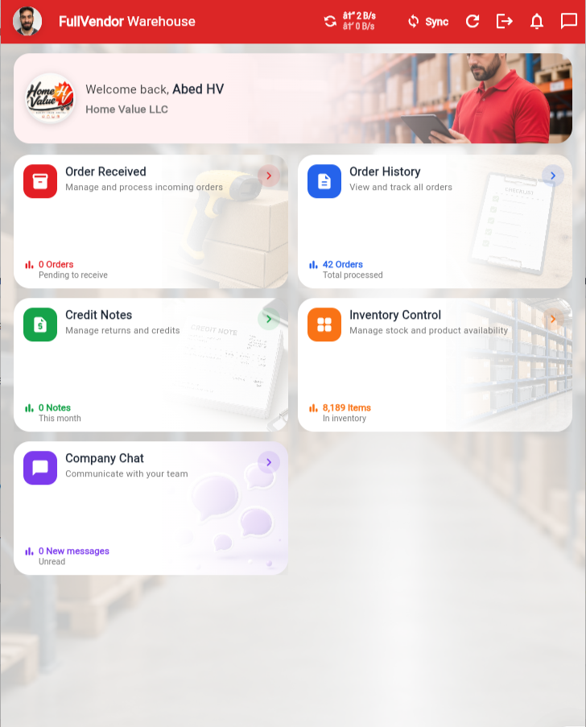

01 · Panel principal
Tu operación de almacén en una sola pantalla
Visualiza pedidos recibidos, historial de órdenes, notas de crédito, inventario y comunicación con tu equipo desde un panel central.
Gestión rápida del almacén
Indicadores y accesos directos
